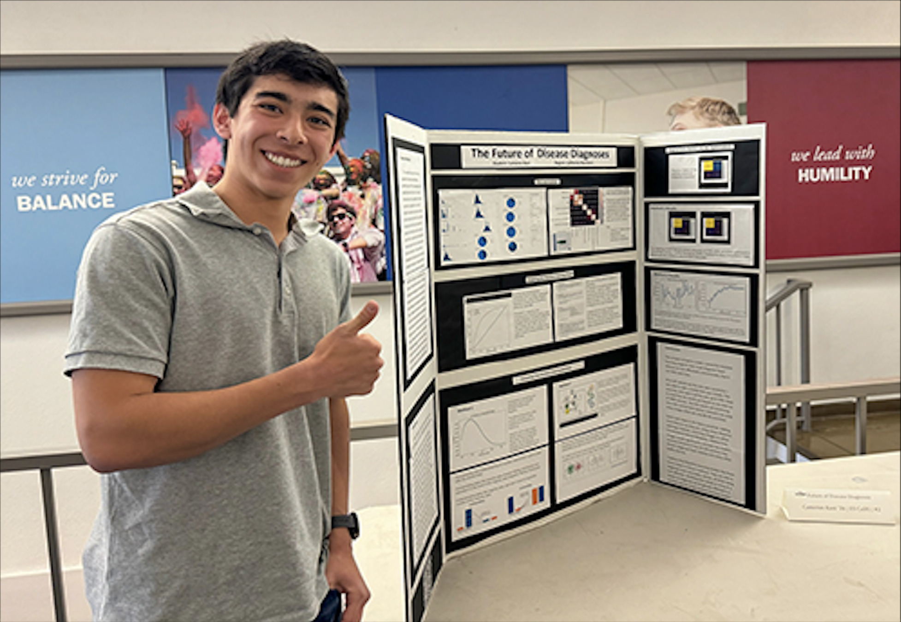

About
I've always been a student who enjoys taking what I learn in class and extending those ideas to create or discover something new. STEM competitions give me that freedom — unlike school's rigid curriculum, they let me choose a topic I care about, do my own research, and make my own mistakes. I find that the best learning happens off the training wheels of school projects.
Education & Programs
Accomplishments
Optimizing Nitrogen Consumption
3rd Place — Golden Gate STEM Fair
Analyzed how dietary nitrogen impacts body weight.
The Future of Disease Diagnosis
2nd Place — Golden Gate STEM Fair & JSHS Norcal Regional Finalist
Python ML model for early heart disease diagnosis with 94% accuracy.
Controlling Elections for Cancer Treatment
2nd Place — Crystal STEM Symposium
View presentation →Novel ALS Treatment
BioEngineering High School Competition & Paradigm Competition Finalist (June 2025)
View paper →In Action
